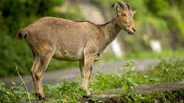
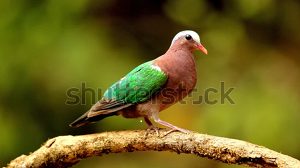
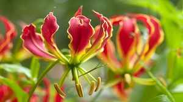
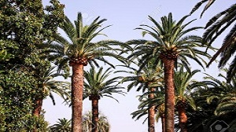
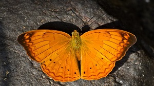
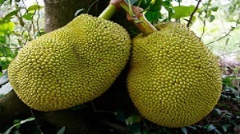

The State of Tamil Nadu has a hoary antiquity. Though early sangam classics throw historical references, we pass to recorded history only from the Pallavas. The southern states of India were under the hegemony of the Cholas, the Cheras and the Pandyas for centuries. The Pallavas held supremacy from about the second quarter of the fourth century A.D. They were the originators of the famous Dravidian style of temple architecture. The last Pallava ruler was Aparajita, in whose reign the later Cholas under Vijayalaya and Aditya asserted themselves by about the 10th century. At the end of the 11th century, Tamil Nadu was ruled by several dynasties like the Chalukyas, Cholas and Pandyas. In the two centuries that followed, the imperial Cholas gained paramountcy over South India.
Muslims gradually strengthened their position, which led to the establishment of the Bahamani Sultanate, by the middle of the 14th century. At the same time, the Vijayanagar Kingdom quickly consolidated itself and extended its sway over the whole of South India, and at the close of the century, Vijayanagar became the supreme power in South. However, it crumbled at the battle of Talikota in 1564 to the confederate forces of the Deccan Sultans.
Even during the period of the tumultuous confusion that followed the battle of Talikota, European commercial interest had appeared as rivals in the area of South India. The Portuguese, the Dutch, the French and the English came in quick succession and established trading centres known as 'Factories'. East India Company, which had established its factory at Masulipatnam (now in Andhra Pradesh) in 1611, gradually annexed territories by encouraging enmity among the native rulers. Tamil Nadu was one of the first of British settlements in India. The State is the successor to the old Madras Presidency, which covered the bulk of the southern peninsula in 1901. The composite Madras State was later reorganised, and the present Tamil Nadu was formed. Tamil Nadu is bounded on north by Andhra Pradesh and Karnataka, on the west by Kerala, on the east by the Bay of Bengal, and on the south by the Indian Ocean.
| District Statistics | 38 |
| Revenue Divisions | 87 |
| Taulks | 310 |
| Firkas | 1,349 |
| Revenue Vilages | 17,680 |
| Municipal Corporation | 15 |
| Municipalities | 121 |
| Panchayat Union(Blocks) | 385 |
| Town Panchayats | 528 |
| Village Panchayats | 12,618 |
| Lok Sabha Constituencies | 12,618 |
| Assembly Constituencies | 238 |
| State Emblem | Emblem of Tamil Nadu |  |
| State Animal | Nilgiri Tahr |  |
| State Bird | Emeraid Dove |  |
| State Flower | Glorosa Lily |  |
| State Tree | Palm Tree |  |
| State Yeoman | Tamil Yeoman |  |
| State Fruit | Jack Fruit |  |
Agriculture is the major occupation in Tamilnadu. The total cultivated area in the State was 56.10 million hectares in 2007-08. The principal food crops include paddy, millets and pulses. Commercial crops include sugarcane, cotton, sunflower, coconut, cashew, chillies, gingelly and groundnut. Plantation crops are tea, coffee, cardamom and rubber. Major forest produces are timber, sandalwood, pulp wood and fuel wood. Tamilnadu occupies a premier position in the production and extensive application of bio-fertilizers. Efforts are on to improve farming technologies so as to increase yields in the low rainfall areas of the State. Annual food grains production in the year 2007-08 was 100.35 lakh mt.

Major Industries in the State are cotton, heavy commercial vehicles, auto components, railway coaches, power pumps, leather tanning industries, cement, sugar, paper, automobiles and safety matches.
Knowledge based industries like I.T. and Biotechnology have become the thrust area in the industrial scene in Tamilnadu. TIDEL, a software technology park, has been established in Tharamani, Chennai. The Software export from the State which was Rs. 20,700 crores in 2006-07 is expected to cross Rs. 25,000 crores in 2007-08. Top I.T. and Telecom companies such as Nokia, Motorola, Foxcon, Flextronic and Dell have commenced production.
Global auto majors Hyundai Motors, Ford, Hindustan Motors and Mitsubishi have commenced production plants. Ashok Leyland and TAFE have set up expansion plants in Chennai.
Main mineral wealth of the state is granite, lignite and limestone. The state is an important exporter of tanned skin and leather goods, yarn, tea, coffee, spices, engineering goods, tobacco, handicrafts and black granite. Tamil Nadu contributes to 60 per cent of the tannery industry in India.
Important irrigation schemes and modernisation of existing Periyar Vaigai System, Palar Basin System and Parambikulam-Aliyar System besides the minor system in Vellar, Pennayar, Araniyar Amaravathi, Chithar basins totaling, an extent of six lakh acres of existing ayacut in Tamil Nadu have been benefited by implementing the 'System Improvement and Farmers Turnover Projects' executed with assistance from World Bank. The major irrigation system covering one-third of irrigated extent in Tamil Nadu, namely tank irrigation system has been given due regard for development under WRCP, and 620 tanks maintained by Public Works Department falling under Palar, Vaigai, and Tamaraparani Basins have been taken up for rehabilitation and improvement. The State has become the pioneer State to implement the system of 'River basin management' by an individual body consisting of officials and farmers besides various representatives of the basin. To start with, Basin Management Boards have been formed for Palar and Tamaraparani basins.
The total installed capacity for electricity in the State is 8,249 MW. The installed capacity of State Sector is 5,288 MW, and that of Private Sector is 1,058 MW. Apart from this, 1,903 MW is available as share from Central Sector.
The major minerals mined in Tamil Nadu are limestone, bauxite, gypsum, lignite (brown coal), magnesite, and iron ore. The opencast lignite mine at Neyveli, in the north-central part of the state, is among the largest in India, and its products are used to fuel a thermal-power plant that provides much of the state’s electricity. The bulk of Tamil Nadu’s energy comes from thermal stations, but hydroelectric plants—especially along the Kaveri River and its tributaries—provide an important secondary source of energy. The state also is a leader in wind-power generation.
Roads: The length of roads network in Tamil Nadu is 1, 93,918 km.
Railways: The total length of railways is 4,181 km, the main junctions being Chennai, Madurai,
Tiruchirapalli, Coimbatore and Tirunelveli.
Aviation: Chennai being the international airport in the southern region is the main centre of airline
routes. Besides, there are airports at
Tiruchirapalli, Madurai, Coimbatore and Salem.
Ports:Major ports in the State are Chennai and Tuticorin. There are seven other minor ports including
Cuddalore and Nagapattinam
Tens of thousands of public and private primary, middle, and high schools are scattered across the state of Tamil Nadu. In addition, there are numerous arts and science colleges, medical colleges, engineering colleges, polytechnic institutes, and industrial training institutes. Among the most prominent of Tamil Nadu’s universities are the University of Madras (1857) and Tamil Nadu Veterinary and Animal Sciences University (1989), both in Chennai, Annamalai University (1929) in Chidambaram; Tamil Nadu Agricultural University (1971) in Coimbatore; and Madurai Kamaraj University (1966) in Madurai. The Dakshina Bharat Hindi Prachar Sabha (1918) in Chennai and the Gandhigram Rural University (1956) in Gandhigram, in southwest-central Tamil Nadu, are the two institutes of national importance that are engaged in popularizing the Hindi language and Mahatma Gandhi’s concept of rural higher education, respectively. Tamil University (1981) near Thanjavur (Tanjore), in the eastern part of the state, focuses on the study of Tamil language, literature, and culture.
Forests cover roughly 15 percent of the state. At the highest elevations in the Western Ghats, the mountains support subalpine vegetation. Along the eastern side of the Western Ghats and in the hills of the northern and central districts, the plant life is a mixture of evergreen and deciduous species, some of which are markedly adapted to arid conditions.
Tamil Nadu has several national parks and more than a dozen wildlife and bird sanctuaries. Among the most notable of these protected areas are the Mudlumbai Wildlife Sanctuary and National Park in the Nilgiri Hills and the large Indira Gandhi Wildlife Sanctuary and National Park at the southern tip of the Western Ghats. These sanctuaries provide a safe habitat for a broad spectrum of fauna, including elephants, gaurs (wild cattle), Nilgiri tahrs (goatlike mammals), wild boars, sloth bears, and various species of deer. Tigers, leopards, and an assortment of primates, including macaques, langurs, and lorises, also inhabit these areas. Venomous king cobras are among the many species of reptiles that make their home in Tamil Nadu. Woodpeckers and flycatchers are common woodland birds; aquatic birds find a haven at the Vedantangal sanctuary in the south-central part of the state